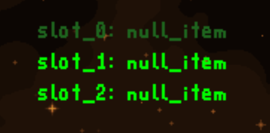
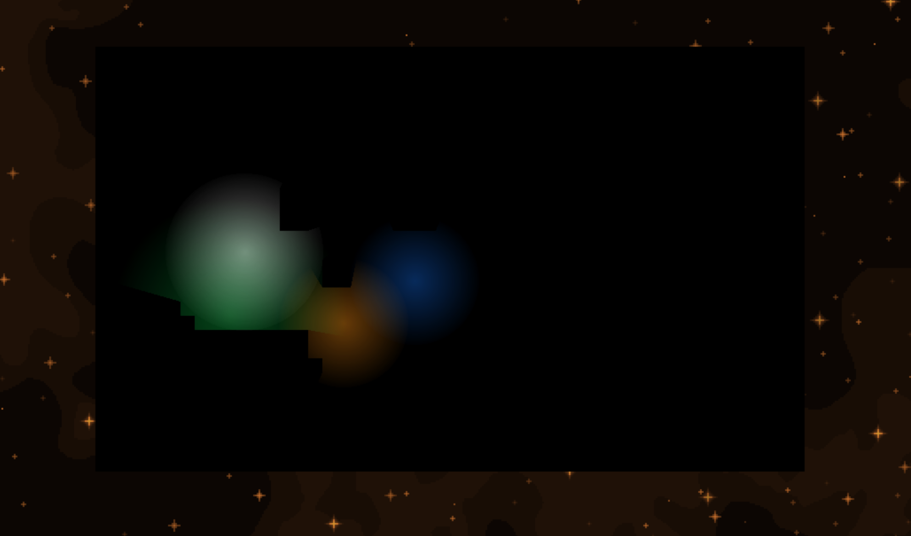
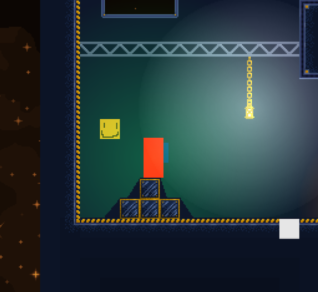
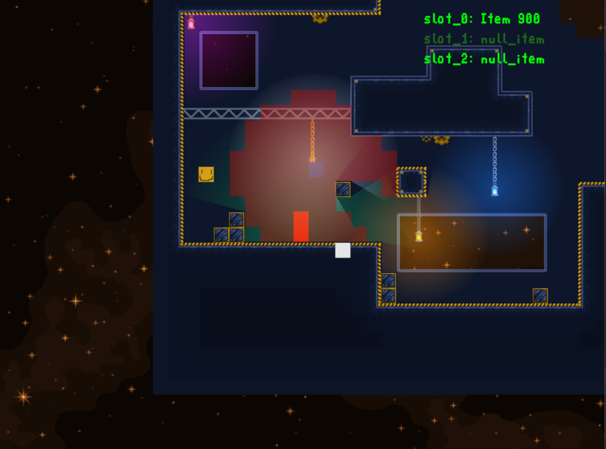

I've made substantial progress in about a month and a half and I'm very excited to show off what I've done! I'm going to split this update into bug fixes and features added, because there are a lot of changes to cover in both of those areas.
Bug Fixes
In order of when they were changed (oldest to newest) here is a list of the bugs that have been addressed.
The light rendering code had some serious issues with rendering, and it will now render with respect to the camera, just like all the other game objects. Visibly, nothing has changed, but rendering with respect to the camera is incredibly important to make sure things are rendering in the correct location, and have the proper world location.
Light source tiles added to the tilemap as the result of a reaction now get lit as they are supposed to.
Player now falls at a normal speed when they crouch. Previously, they could slow themselves down in the air by crouching (which halves the player's speed).
Fixed bug where player would land on the very edge of a tile, and still be considered falling. This meant they were unable to jump again, as they were not considered on the ground.
Fixed ambient light calculation to include ALL underground tiles. Basically, I had to change the recursive loop to continue until all tiles were covered, instead of stopping when the light level reached the minimum.
Changed parallax background to calculate the screen size and multiply its own size to fit the screen. Previously, if the image was not large enough, there would be black space in the background.
Fixed error where inventory text was not updated upon level start, so the slots would say "NULL" instead of "null_item"

Here, all the invemtory slots are filled with "null_item" (an empty item) as they should be.
Fixed bug where game enters fullscreen, and causes the entire tilemap to vanish. It's worth noting that I fixed this error, but upon testing it on another device, found that a similar error still remains present. Because the code is identical, I can only assume that there is a discrepancy between how different devices handle rendering, which is something I need to look into.

Example of the problem, where the tilemap completely vanishes after toggling fullscreen mode.
Features
Level Loading
Implemented the ability to load a level from a startup file (startup.json), so the startup level can easily be changed in an external file. I also added the ability to write the current level to that file, so we can "save" a level, however I have yet to actually include this feature since I don't have a save button.
Items
Items now have a property that allows them to break tiles. Certain breakable tiles now require an item to break them, defined in the item properties.
Audio
I have added a very simplistic audio player to load and play .wav files. This functionality has yet to be used anywhere, but when I want to start adding sounds and music, I will not have to worry about the lower level implementation. I am using SDL's mixer library to handle the audio files.
Game State
Added game states, such as: loading and active, to help me determine what the game is currently doing. These states are going to be used a lot more in the future, for determining logic. I also added a menu state, which is unused (because I currently have no menus implemented).
Triggers
A LocationKeyboardTrigger has been added, which detects the player's location on the map and keyboard input. Currently, I am just waiting for the key 'T', but down the line I want to be able to define what keys I want to listen for. This trigger will be used to mimic portal functionality, as I can make triggers that detect the player's location link to reactions that teleport the player to another location. I have also created a YAxisTrigger which detects the player's location on the y-axis. This trigger will be helpful in checking if the player has completely fallen off the map.
Reactions
I added a ton of reactions, so here's the list and quick descriptions:
Light Visibility: Toggles the light sources to render or not
Map Visibility: Toggles the visibility of the tilemap
Next Level: Loads and begins the next level
Player Light Visibility: Toggles the visibility of the player's light
Toggle Dark: Toggles the darkness to be on or off
Toggle Bright: Toggles the bright tilemap effect
Toggle Flight: Toggles the player's ability to fly
Toggle Jump: Switches player's jump height between normal and high
Toggle Keyboard: Toggles whether or not the keyboard is accepting input
Toggle Inventory Lights: Switches how many light sources the inventory can carry (one or many)
UI Visibility: Toggles the visibility of the UI
Animations
The tilemap can now handle animated tiles. This property is defined in the tileData.json file.
Placeable Locations
Light sources can no longer be placed in midair. They now can only be placed on solid (non breakable) ground or hanging off a collidable tile.
Inventory
The inventory will now make sure it has space to hold an item when the player breaks one. If there is no space, the tile will not be broken at all. Right now a debug message appears when this happens, but in the future there will be some sort of on screen reaction. Additionally, I added an inventory option that will only allow the inventory to contain one light source.
Tiles
Tiles can be configured to display a different texture when they are lit.

The orange "smile" tile is currently lit by the player.The orange tile is no longer lit, so there is no more smile :(
Enemies
I have attempted to create enemies before, but the logic fell through because of issues with the light engine. Enemies are meant to be able to detect or "see" light sources within an area that they can see. They will then pathfind to the "brightest" (biggest) light they can see. After rectifying issues in the light engine (done in the previous update), I was able to bring enemies back into play, using some of the old pathfinding code I had already written. Additionally, for debugging purposes, I added a feature that will allow me to see what tiles an enemy can see.

The enemy can currently "see" the tiles highlighted in red. These tiles are lit and within the enemy's radius.
Collisions
There is now a system in place that will detect if the player and enemy are colliding. It currently has no effect, but the detection system works.